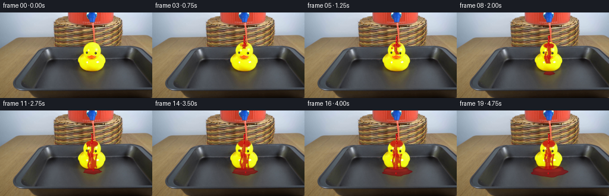
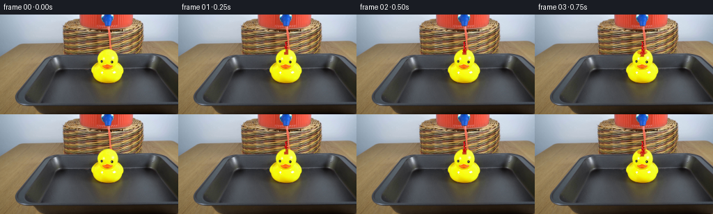

CODING AGENTS AS PIXEL WORLD MODELS
traex/GPT-5.6-Sol · 0086
点击播放 · 原生 RGB 像素
逐轮保存的候选
回放视频、检查图与代码变化。
每份候选均可单独播放。实际图片检查记录在下方工具轨迹中。
候选 01播放与检查图
点击播放 · 原生 RGB 像素


展开代码变化
--- 上一保存版本
+++ 本次保存版本
@@ -0,0 +1,174 @@
+from pathlib import Path
+import numpy as np
+import cv2
+from PIL import Image, ImageDraw
+import artifact_io
+
+ROOT = Path(__file__).resolve().parent
+base = np.asarray(Image.open(ROOT / "first_frame.png").convert("RGB"), dtype=np.uint8)
+H, W = base.shape[:2]
+S = 4 # antialiasing scale for fluid geometry
+rng = np.random.default_rng(8617)
+
+# Isolate the central duck. The close operation includes its small dark facial
+# details in the solid rubber silhouette, but keeps the tray and wicker out.
+hsv = cv2.cvtColor(base, cv2.COLOR_RGB2HSV)
+yellow = ((hsv[..., 0] >= 15) & (hsv[..., 0] <= 43) &
+ (hsv[..., 1] > 75) & (hsv[..., 2] > 95)).astype(np.uint8)
+roi = np.zeros((H, W), np.uint8)
+roi[47:107, 124:184] = 1
+yellow &= roi
+n, labels, stats, _ = cv2.connectedComponentsWithStats(yellow, 8)
+# Components touch through specular gaps imperfectly; unite all useful yellow
+# pieces in the compact duck area, then gently close those gaps.
+duck = cv2.morphologyEx(yellow, cv2.MORPH_CLOSE, np.ones((7, 7), np.uint8))
+duck = cv2.morphologyEx(duck, cv2.MORPH_OPEN, np.ones((3, 3), np.uint8))
+# Avoid inventing silhouette beyond the well-lit duck: expand only very locally.
+duck = cv2.dilate(duck, np.ones((3, 3), np.uint8), iterations=1)
+
+def poly_mask(points, blur=0.0):
+ """Antialiased polygon/ellipse-like mask rendered at 4x."""
+ img = Image.new("L", (W*S, H*S), 0)
+ d = ImageDraw.Draw(img)
+ d.polygon([(int(x*S), int(y*S)) for x, y in points], fill=255)
+ a = np.asarray(img.resize((W, H), Image.Resampling.LANCZOS), np.float32) / 255.0
+ if blur:
+ a = cv2.GaussianBlur(a, (0, 0), blur)
+ return np.clip(a, 0, 1)
+
+def ellipse_mask(box, blur=0.0):
+ img = Image.new("L", (W*S, H*S), 0)
+ d = ImageDraw.Draw(img)
+ d.ellipse(tuple(int(v*S) for v in box), fill=255)
+ a = np.asarray(img.resize((W, H), Image.Resampling.LANCZOS), np.float32) / 255.0
+ if blur:
+ a = cv2.GaussianBlur(a, (0, 0), blur)
+ return np.clip(a, 0, 1)
+
+def composite(im, color, alpha):
+ a = np.clip(alpha, 0, 1)[..., None]
+ return im * (1-a) + np.asarray(color, np.float32) * a
+
+def liquid_streak(frame_index, reach):
+ """Mask for red liquid spreading down the duck's curved front."""
+ yy, xx = np.mgrid[0:H, 0:W]
+ phase = frame_index * .43
+ # Main narrow course meanders naturally over the moulded rubber.
+ center = 154.2 + 1.35*np.sin((yy-48)*.23 + phase) + .45*np.sin((yy-48)*.71)
+ width = 2.2 + np.maximum(yy-52, 0)*.050
+ field = np.abs(xx-center) < width
+ field &= (yy >= 50) & (yy <= reach)
+ # Liquid first sheets over the crown, then separates into asymmetric rivulets.
+ age = max(frame_index-2, 0)
+ crown_rx = min(3.5 + age*.78, 11.2)
+ crown_ry = min(2.2 + age*.38, 6.4)
+ crown = (((xx-154.5)/crown_rx)**2 + ((yy-55.5)/crown_ry)**2) < 1
+ branch_l = (np.abs(xx-(149.0-1.1*np.sin(yy*.31+phase))) < 1.35) & (yy>65) & (yy<reach-1) & (frame_index>6)
+ branch_r = (np.abs(xx-(161.2+1.2*np.sin(yy*.20))) < 1.15) & (yy>72) & (yy<reach-3) & (frame_index>8)
+ m = (field | crown | branch_l | branch_r).astype(np.float32) * duck
+ return cv2.GaussianBlur(m, (0,0), .52)
+
+def stream_layer(frame_index):
+ """Continuous falling stream, from the dispenser outlet to the duck."""
+ if frame_index == 0:
+ return np.zeros((H,W),np.float32), np.zeros((H,W),np.float32)
+ yy, xx = np.mgrid[0:H, 0:W]
+ start = 39.0
+ # The first two frames show the drop lengthening before contact.
+ end = min(55.0, 41.0 + frame_index*5.4)
+ center = 154.4 + .46*np.sin((yy*1.17)+(frame_index*.83))
+ width = 1.35 + .28*np.sin(frame_index*.71 + yy*.37)
+ core = ((yy >= start) & (yy <= end) & (np.abs(xx-center) <= width)).astype(np.float32)
+ # A rounded leading drop until the stream reaches the duck.
+ if end < 54.0:
+ drop = (((xx-center.astype(float)) / 2.05)**2 + ((yy-end)/2.9)**2 < 1).astype(np.float32)
+ core = np.maximum(core, drop)
+ core = cv2.GaussianBlur(core, (0,0), .38)
+ # Fine warm highlight along the left side gives translucent liquid volume.
+ hi = ((yy>=start+1) & (yy<=end-1) & (np.abs(xx-(center-.72))<.38)).astype(np.float32)
+ hi = cv2.GaussianBlur(hi,(0,0),.28)
+ return core, hi
+
+def puddle_mask(i):
+ if i < 7:
+ return np.zeros((H,W), np.float32)
+ q = min((i-6)/13.0, 1.0)
+ cx, cy = 155.5, 102.5
+ rx, ry = 5.5 + 24.0*q, 1.8 + 7.6*q
+ # Stable deterministic irregular perimeter, appropriate to a shallow tray.
+ pts=[]
+ for k in range(48):
+ a=2*np.pi*k/48
+ wobble=1 + .075*np.sin(5*a+0.6) + .045*np.sin(9*a+1.8)
+ pts.append((cx+rx*wobble*np.cos(a), cy+ry*wobble*np.sin(a)))
+ return poly_mask(pts, .33) * .93
+
+frames=[]
+for i in range(20):
+ if i == 0:
+ frames.append(base.copy())
+ continue
+ im = base.astype(np.float32)
+
+ # Shallow spreading pool is behind the duck but on top of the metal tray.
+ pool = puddle_mask(i)
+ im = composite(im, (138, 8, 14), pool*.72)
+ # A dark lower rim and a reflected red glint make the puddle read as liquid.
+ if i >= 7:
+ q=min((i-6)/13.0,1.0)
+ edge = np.clip(pool-cv2.erode(pool,np.ones((3,3),np.uint8)),0,1)
+ im = composite(im,(76,5,9),edge*.32)
+ glint = ellipse_mask((145-14*q, 99.2-2*q, 160+16*q, 102.0+1.5*q), .42)
+ glint *= pool
+ im = composite(im,(245,65,60),glint*.17)
+
+ # The cascade reaches farther down the duck with each quarter-second frame.
+ reach = min(100, int(55 + max(i-2,0)*5.0))
+ wet = liquid_streak(i, reach)
+ # Underlayer: dark saturated red; upper translucent layer retains rubber shape.
+ im = composite(im, (167, 8, 14), wet*.73)
+ inner = cv2.erode((wet>.20).astype(np.uint8),np.ones((3,3),np.uint8)).astype(np.float32)
+ im = composite(im, (222, 18, 22), inner*.23)
+
+ # Small impact splash shoulders, growing only after the stream arrives.
+ if i >= 3:
+ age=min((i-2)/5,1)
+ splash = np.maximum(ellipse_mask((148-3*age,52,155,57+2*age),.25),
+ ellipse_mask((154,52,161+3*age,57+2*age),.25)) * duck
+ im = composite(im,(203,10,17),splash*.42)
+
+ # Thin falling stream is foremost. It remains steady, with subpixel motion.
+ st, hi = stream_layer(i)
+ im = composite(im,(193,7,13),st*.94)
+ im = composite(im,(255,88,72),hi*.62)
+
+ # A few physically plausible beads thrown from the impact and base.
+ if i >= 4:
+ bead_alpha=np.zeros((H,W),np.float32)
+ droplets=[]
+ # short-lived crown beads near the top
+ if i in (4,5,8,11,14,17):
+ side=-1 if (i//3)%2 else 1
+ droplets.append((154+side*(5+(i%3)), 58+(i%2)*2, 1.0))
+ # drips emerge at the duck's foot after the cascade reaches it
+ if i>=10:
+ droplets.append((151+(i%3)*3, min(106,99+(i-10)*1.35), 1.05))
+ for x,y,r in droplets:
+ bead_alpha=np.maximum(bead_alpha,ellipse_mask((x-r,y-r*1.5,x+r,y+r*1.5),.24))
+ im=composite(im,(187,7,13),bead_alpha*.88)
+ shine=np.roll(bead_alpha,(-1,-1),(0,1))
+ im=composite(im,(255,92,72),shine*bead_alpha*.27)
+
+ # Minute wet highlights on the coated centre, changing with the flowing film.
+ yy,xx=np.mgrid[0:H,0:W]
+ spec=((np.abs(xx-(152.7+.55*np.sin(yy*.34+i*.4)))<.42)&
+ (yy>55)&(yy<reach-2)).astype(np.float32)*wet
+ spec=cv2.GaussianBlur(spec,(0,0),.25)
+ im=composite(im,(255,126,105),spec*.42)
+
+ frames.append(np.clip(np.rint(im),0,255).astype(np.uint8))
+
+frames=np.stack(frames)
+assert frames.shape == (20,144,256,3) and frames.dtype == np.uint8
+assert np.array_equal(frames[0], base)
+artifact_io.save(frames, ROOT)
可观测工具轨迹
实际执行的命令与返回图片。
命令 1exit 0
/bin/bash -lc "cat GENERATION_RULES.md && printf '\\n---PROMPT---\\n' && cat prompt.txt"
命令 2exit 0
/bin/bash -lc "find . -maxdepth 2 -type f -printf '%p %s bytes\\n' | sort && python3 - <<'PY'
from PIL import Image
im=Image.open('first_frame.png')
print(im.mode, im.size)
PY"命令 3exit 0
/bin/bash -lc "python3 - <<'PY'
from PIL import Image
import numpy as np
im=np.array(Image.open('first_frame.png'))
# hsv cv2
import cv2
hsv=cv2.cvtColor(im,cv2.COLOR_RGB2HSV)
for name,mask in {
'red1':((hsv[:,:,0]<12)&(hsv[:,:,1]>100)&(hsv[:,:,2]>80)),
'red2':((hsv[:,:,0]>170)&(hsv[:,:,1]>100)&(hsv[:,:,2]>80)),
'yellow':((hsv[:,:,0]>18)&(hsv[:,:,0]<40)&(hsv[:,:,1]>80)&(hsv[:,:,2]>80)),
'brown':((hsv[:,:,0]>5)&(hsv[:,:,0]<25)&(hsv[:,:,1]>40)&(hsv[:,:,2]>30)&(hsv[:,:,2]<180)),
'bright':(hsv[:,:,2]>220),
}.items():
ys,xs=np.where(mask)
print(name,len(xs), 'bbox', (xs.min(),ys.min(),xs.max(),ys.max()) if len(xs) else None,'cent', (xs.mean(),ys.mean()) if len(xs) else None)
n,lab,stats,cents=cv2.connectedComponentsWithStats(mask.astype('uint8'))
comps=sorted([(s[4],tuple(s[:4]),tuple(c)) for s,c in zip(stats[1:],cents[1:])],reverse=True)[:10]
print(comps)
# coarse 16x9 RGB averages and HSV dominant semantic chars
for by in range(0,144,8):
line=''
for bx in range(0,256,8):
a=im[by:by+8,bx:bx+8].mean((0,1))
# nearest labels
colors={'R':(180,30,30),'Y':(210,170,40),'B':(80,55,35),'W':(200,200,190),'K':(35,35,30),'G':(100,100,90),'b':(120,85,50)}
ch=min(colors,key=lambda k:np.linalg.norm(a-colors[k]))
line+=ch
print(line)
PY"命令 4exit 0
/bin/bash -lc "python3 - <<'PY'
from PIL import Image
import numpy as np, cv2
im=np.array(Image.open('first_frame.png')); hsv=cv2.cvtColor(im,cv2.COLOR_RGB2HSV)
for y in range(0,132,4):
s=f'{y:03d} '
for x in range(76,224,4):
a=im[y:y+4,x:x+4].mean((0,1)); H,S,V=cv2.cvtColor(np.uint8([[a]]),cv2.COLOR_RGB2HSV)[0,0]
if S>100 and (H<12 or H>170): c='R'
elif S>80 and 15<H<42: c='Y'
elif V<55:c='#'
elif V<100:c='d'
elif S<25 and V>210:c='.'
elif S<35 and V>140:c=','
elif S<55 and V>100:c='g'
elif 5<H<30 and S>35:c='b'
else:c='o'
s+=c
print(s)
print(' '+''.join(str((x//10)%10) for x in range(76,224,4)))
PY"命令 5exit 0
/bin/bash -lc "python3 - <<'PY'
from PIL import Image
import numpy as np
im=np.array(Image.open('first_frame.png'))
for y in range(0,125,3):
print(y, ['%02x%02x%02x'%tuple(im[y:y+3,x:x+3].mean((0,1)).astype(int)) for x in range(130,181,5)])
PY"命令 6exit 0
/bin/bash -lc "python3 - <<'PY'
from PIL import Image
import numpy as np
im=np.array(Image.open('first_frame.png'))
for y in range(0,60):
s=''
for x in range(90,211):
r,g,b=im[y,x]
if r>1.5*g and r>1.4*b and r>100:s+='R'
elif r>180 and g>160 and b<100:s+='Y'
elif max(r,g,b)-min(r,g,b)<20 and np.mean([r,g,b])>180:s+='.'
elif max(r,g,b)-min(r,g,b)<25:s+='g'
elif b>r*1.3:s+='B'
elif r>g*1.3 and g>b*1.1:s+='b'
else:s+=' '
print(f'{y:02}',s)
PY"命令 7exit 0
/bin/bash -lc 'cat artifact_io.py'
命令 8exit 0
/bin/bash -lc "python3 - <<'PY'
import cv2, numpy as np
from PIL import Image
im=np.array(Image.open('first_frame.png')); h=cv2.cvtColor(im,cv2.COLOR_RGB2HSV)
y=(h[:,:,0]>18)&(h[:,:,0]<40)&(h[:,:,1]>90)&(h[:,:,2]>100)
for yy in range(35,121,2):
xs=np.where(y[yy])[0]; # only central component x100-220
xs=xs[(xs>100)&(xs<220)]
if len(xs): print(yy,xs.min(),xs.max(),len(xs))
PY"命令 9exit 0
/bin/bash -lc "cat > generate.py <<'PY'
from pathlib import Path
import numpy as np
import cv2
from PIL import Image, ImageDraw
import artifact_io
ROOT = Path(__file__).resolve().parent
base = np.asarray(Image.open(ROOT / \"first_frame.png\").convert(\"RGB\"), dtype=np.uint8)
H, W = base.shape[:2]
S = 4 # antialiasing scale for fluid geometry
rng = np.random.default_rng(8617)
# Isolate the central duck. The close operation includes its small dark facial
# details in the solid rubber silhouette, but keeps the tray and wicker out.
hsv = cv2.cvtColor(base, cv2.COLOR_RGB2HSV)
yellow = ((hsv[..., 0] >= 15) & (hsv[..., 0] <= 43) &
(hsv[..., 1] > 75) & (hsv[..., 2] > 95)).astype(np.uint8)
roi = np.zeros((H, W), np.uint8)
roi[47:107, 124:184] = 1
yellow &= roi
n, labels, stats, _ = cv2.connectedComponentsWithStats(yellow, 8)
# Components touch through specular gaps imperfectly; unite all useful yellow
# pieces in the compact duck area, then gently close those gaps.
duck = cv2.morphologyEx(yellow, cv2.MORPH_CLOSE, np.ones((7, 7), np.uint8))
duck = cv2.morphologyEx(duck, cv2.MORPH_OPEN, np.ones((3, 3), np.uint8))
# Avoid inventing silhouette beyond the well-lit duck: expand only very locally.
duck = cv2.dilate(duck, np.ones((3, 3), np.uint8), iterations=1)
def poly_mask(points, blur=0.0):
\"\"\"Antialiased polygon/ellipse-like mask rendered at 4x.\"\"\"
img = Image.new(\"L\", (W*S, H*S), 0)
d = ImageDraw.Draw(img)
d.polygon([(int(x*S), int(y*S)) for x, y in points], fill=255)
a = np.asarray(img.resize((W, H), Image.Resampling.LANCZOS), np.float32) / 255.0
if blur:
a = cv2.GaussianBlur(a, (0, 0), blur)
return np.clip(a, 0, 1)
def ellipse_mask(box, blur=0.0):
img = Image.new(\"L\", (W*S, H*S), 0)
d = ImageDraw.Draw(img)
d.ellipse(tuple(int(v*S) for v in box), fill=255)
a = np.asarray(img.resize((W, H), Image.Resampling.LANCZOS), np.float32) / 255.0
if blur:
a = cv2.GaussianBlur(a, (0, 0), blur)
return np.clip(a, 0, 1)
def composite(im, color, alpha):
a = np.clip(alpha, 0, 1)[..., None]
return im * (1-a) + np.asarray(color, np.float32) * a
def liquid_streak(frame_index, reach):
\"\"\"Mask for red liquid spreading down the duck's curved front.\"\"\"
yy, xx = np.mgrid[0:H, 0:W]
phase = frame_index * .43
# Main narrow course meanders naturally over the moulded rubber.
center = 154.2 + 1.35*np.sin((yy-48)*.23 + phase) + .45*np.sin((yy-48)*.71)
width = 2.2 + np.maximum(yy-52, 0)*.050
field = np.abs(xx-center) < width
field &= (yy >= 50) & (yy <= reach)
# Liquid first sheets over the crown, then separates into asymmetric rivulets.
age = max(frame_index-2, 0)
crown_rx = min(3.5 + age*.78, 11.2)
crown_ry = min(2.2 + age*.38, 6.4)
crown = (((xx-154.5)/crown_rx)**2 + ((yy-55.5)/crown_ry)**2) < 1
branch_l = (np.abs(xx-(149.0-1.1*np.sin(yy*.31+phase))) < 1.35) & (yy>65) & (yy<reach-1) & (frame_index>6)
branch_r = (np.abs(xx-(161.2+1.2*np.sin(yy*.20))) < 1.15) & (yy>72) & (yy<reach-3) & (frame_index>8)
m = (field | crown | branch_l | branch_r).astype(np.float32) * duck
return cv2.GaussianBlur(m, (0,0), .52)
def stream_layer(frame_index):
\"\"\"Continuous falling stream, from the dispenser outlet to the duck.\"\"\"
if frame_index == 0:
return np.zeros((H,W),np.float32), np.zeros((H,W),np.float32)
yy, xx = np.mgrid[0:H, 0:W]
start = 39.0
# The first two frames show the drop lengthening before contact.
end = min(55.0, 41.0 + frame_index*5.4)
center = 154.4 + .46*np.sin((yy*1.17)+(frame_index*.83))
width = 1.35 + .28*np.sin(frame_index*.71 + yy*.37)
core = ((yy >= start) & (yy <= end) & (np.abs(xx-center) <= width)).astype(np.float32)
# A rounded leading drop until the stream reaches the duck.
if end < 54.0:
drop = (((xx-center.astype(float)) / 2.05)**2 + ((yy-end)/2.9)**2 < 1).astype(np.float32)
core = np.maximum(core, drop)
core = cv2.GaussianBlur(core, (0,0), .38)
# Fine warm highlight along the left side gives translucent liquid volume.
hi = ((yy>=start+1) & (yy<=end-1) & (np.abs(xx-(center-.72))<.38)).astype(np.float32)
hi = cv2.GaussianBlur(hi,(0,0),.28)
return core, hi
def puddle_mask(i):
if i < 7:
return np.zeros((H,W), np.float32)
q = min((i-6)/13.0, 1.0)
cx, cy = 155.5, 102.5
rx, ry = 5.5 + 24.0*q, 1.8 + 7.6*q
# Stable deterministic irregular perimeter, appropriate to a shallow tray.
pts=[]
for k in range(48):
a=2*np.pi*k/48
wobble=1 + .075*np.sin(5*a+0.6) + .045*np.sin(9*a+1.8)
pts.append((cx+rx*wobble*np.cos(a), cy+ry*wobble*np.sin(a)))
return poly_mask(pts, .33) * .93
frames=[]
for i in range(20):
if i == 0:
frames.append(base.copy())
continue
im = base.astype(np.float32)
# Shallow spreading pool is behind the duck but on top of the metal tray.
pool = puddle_mask(i)
im = composite(im, (138, 8, 14), pool*.72)
# A dark lower rim and a reflected red glint make the puddle read as liquid.
if i >= 7:
q=min((i-6)/13.0,1.0)
edge = np.clip(pool-cv2.erode(pool,np.ones((3,3),np.uint8)),0,1)
im = composite(im,(76,5,9),edge*.32)
glint = ellipse_mask((145-14*q, 99.2-2*q, 160+16*q, 102.0+1.5*q), .42)
glint *= pool
im = composite(im,(245,65,60),glint*.17)
# The cascade reaches farther down the duck with each quarter-second frame.
reach = min(100, int(55 + max(i-2,0)*5.0))
wet = liquid_streak(i, reach)
# Underlayer: dark saturated red; upper translucent layer retains rubber shape.
im = composite(im, (167, 8, 14), wet*.73)
inner = cv2.erode((wet>.20).astype(np.uint8),np.ones((3,3),np.uint8)).astype(np.float32)
im = composite(im, (222, 18, 22), inner*.23)
# Small impact splash shoulders, growing only after the stream arrives.
if i >= 3:
age=min((i-2)/5,1)
splash = np.maximum(ellipse_mask((148-3*age,52,155,57+2*age),.25),
ellipse_mask((154,52,161+3*age,57+2*age),.25)) * duck
im = composite(im,(203,10,17),splash*.42)
# Thin falling stream is foremost. It remains steady, with subpixel motion.
st, hi = stream_layer(i)
im = composite(im,(193,7,13),st*.94)
im = composite(im,(255,88,72),hi*.62)
# A few physically plausible beads thrown from the impact and base.
if i >= 4:
bead_alpha=np.zeros((H,W),np.float32)
droplets=[]
# short-lived crown beads near the top
if i in (4,5,8,11,14,17):
side=-1 if (i//3)%2 else 1
droplets.append((154+side*(5+(i%3)), 58+(i%2)*2, 1.0))
# drips emerge at the duck's foot after the cascade reaches it
if i>=10:
droplets.append((151+(i%3)*3, min(106,99+(i-10)*1.35), 1.05))
for x,y,r in droplets:
bead_alpha=np.maximum(bead_alpha,ellipse_mask((x-r,y-r*1.5,x+r,y+r*1.5),.24))
im=composite(im,(187,7,13),bead_alpha*.88)
shine=np.roll(bead_alpha,(-1,-1),(0,1))
im=composite(im,(255,92,72),shine*bead_alpha*.27)
# Minute wet highlights on the coated centre, changing with the flowing film.
yy,xx=np.mgrid[0:H,0:W]
spec=((np.abs(xx-(152.7+.55*np.sin(yy*.34+i*.4)))<.42)&
(yy>55)&(yy<reach-2)).astype(np.float32)*wet
spec=cv2.GaussianBlur(spec,(0,0),.25)
im=composite(im,(255,126,105),spec*.42)
frames.append(np.clip(np.rint(im),0,255).astype(np.uint8))
frames=np.stack(frames)
assert frames.shape == (20,144,256,3) and frames.dtype == np.uint8
assert np.array_equal(frames[0], base)
artifact_io.save(frames, ROOT)
PY
python3 generate.py
python3 - <<'PY'
import numpy as np
from PIL import Image
x=np.load('pixels.npz')['pixels']
print(x.shape, len(list(__import__('pathlib').Path('frames').glob('*.png'))))
print('frame0 identical',np.array_equal(np.array(Image.open('frames/00.png')),np.array(Image.open('first_frame.png'))))
PY"命令 10exit 127
/bin/bash -lc "python3 - <<'PY'
from PIL import Image
import numpy as np
b=np.array(Image.open('first_frame.png'))
for i in range(20):
a=np.array(Image.open(f'frames/{i:02}.png'))
d=np.max(abs(a.astype(int)-b.astype(int)),2); y,x=np.where(d>5)
red=((a[:,:,0]>120)&(a[:,:,0]>a[:,:,1]*2.2)&(a[:,:,0]>a[:,:,2]*1.6))
yy,xx=np.where(red)
print(i,'changed',len(x), (x.min(),y.min(),x.max(),y.max()) if len(x) else '-', 'red',len(xx),'redbbox',(xx.min(),yy.min(),xx.max(),yy.max()))
PY
file inspection.png index.html pixels.npz frames/19.png"命令 11exit 0
/bin/bash -lc "python3 -m py_compile generate.py && python3 - <<'PY'
from pathlib import Path
from PIL import Image
import numpy as np
required=['generate.py','pixels.npz','index.html','inspection.png']
for p in required: print(p,Path(p).stat().st_size)
ims=[np.asarray(Image.open(f'frames/{i:02d}.png')) for i in range(20)]
print('frames',len(ims),ims[0].shape,ims[0].dtype)
print('first exact',np.array_equal(ims[0],np.asarray(Image.open('first_frame.png').convert('RGB'))))
print('all RGB',all(x.shape==(144,256,3) and x.dtype==np.uint8 for x in ims))
PY"保存候选 1 份；完成命令 11 次；可验证图片返回 0 张。原始 API 响应与完整日志保留在本地。